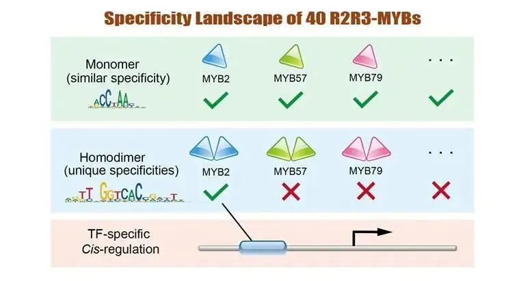
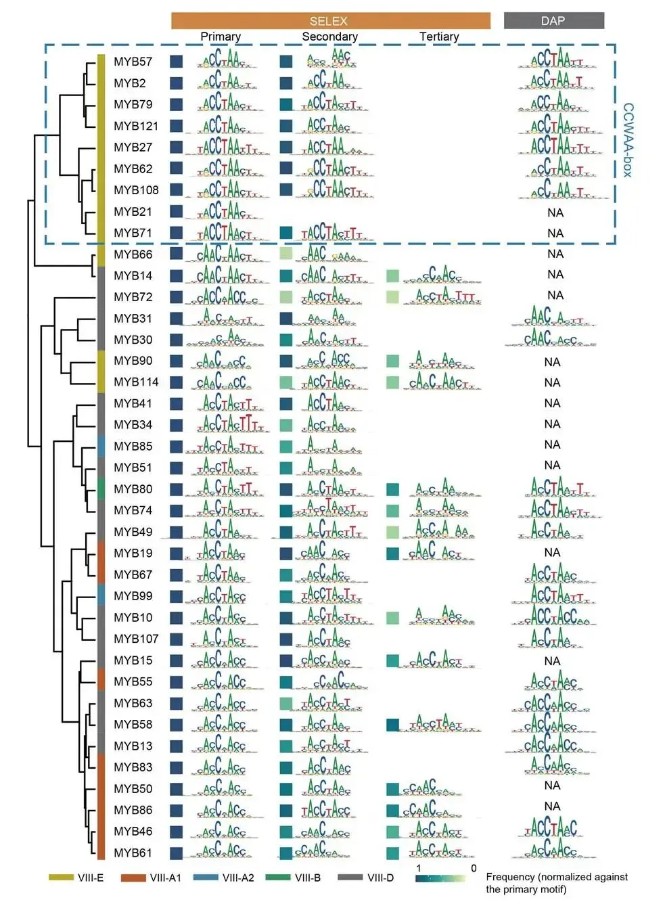
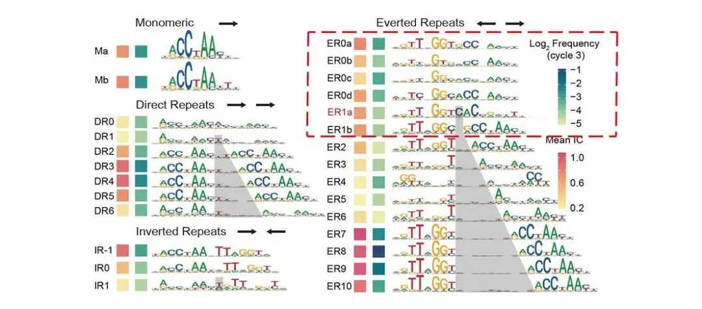
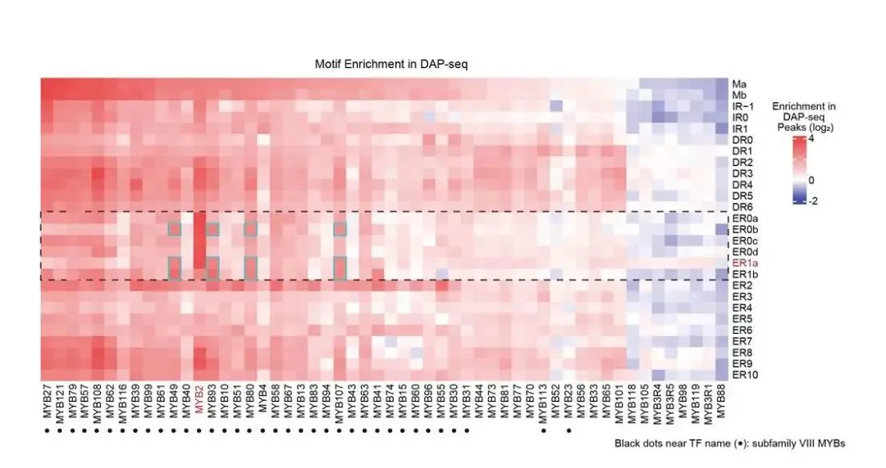
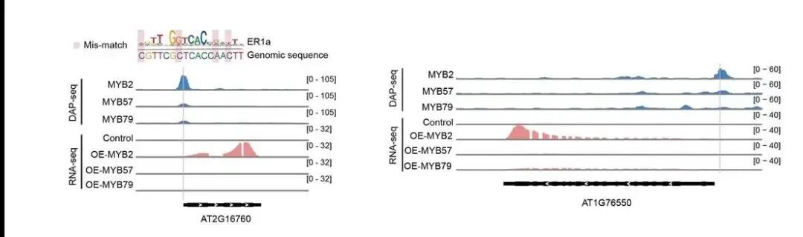

iMeta | 福农朱方捷/王琴组揭示TFs解决“特异性悖论”的新机制
原文：https://mp.weixin.qq.com/s?__biz=MzAwMzIzOTk5OQ==&mid=2247528088&idx=3&sn=763545bbee54bc2e338e8b05fc1a7814&chksm=9b3c17c8ac4b9ede575b0bf94680e9f32098f3364d41846d036f2ceefb0c6a0b2e599d11094a#rd 合集：文献速递
转录因子（Transcription factors，TFs）作为调节基因定时、定点、定量表达的“开关”，是信号转导网络的枢纽，也是决定细胞命运的关键。在进化历程中，许多转录因子家族经历了基因复制、成员扩张、功能分化，产生大量旁系同源（Paralogous）转录因子，使转录调控网络复杂性不断提高，进而使高等动植物具有更强的环境适应性。然而，令人困惑的是许多旁系同源TFs识别的DNA序列高度相似，却具有截然不同的生理功能——这一现象被称为TF的**“**特异性悖论 ”。
近期，福建农林大学海峡联合研究院朱方捷教授团队与王琴教授团队利用高通量SELEX（HT-SELEX）技术解析了40个R2R3-MYBs识别的DNA序列，提供了最系统的MYB家族转录因子特异性数据集，以及迄今最大规模的植物TF二聚体序列特异性数据集，并通过数据分析，揭示了一种TFs解决“特异性悖论”的新机制——通过同源二聚化改变转录因子的序列特异性 ，使其识别独特的顺式元件序列，从而靶向独特的下游基因，实现与同家族其他TFs的差异转录调控。
此研究于2025年3月5日在 iMeta （IF=23.8）在线发表，题为“Specificity landscapes of 40 R2R3-MYBs reveal how paralogs target different cis-elements by homodimeric binding”。

亮点：****
• 揭示旁系同源TFs通过同源二聚化实现靶向特异性的新机制。
•迄今最大规模的植物SELEX数据集，揭示了40个第VIII亚族R2R3-MYBs的DNA序列特异性。
•发现一类特异性较高，识别CC(A/T)AA序列的AtMYB，命名为CCWAA-box。
文章概要：****
首先，利用高通量 SELEX技术研究了40个第VIII亚族R2R3-MYBs的序列特异性，共整理出833个单体及二聚体MYB结合基序。根据单体序列特异性进行聚类分析，发现一组较其他MYB家族转录因子特异性更高的CCWAA-box MYB转录因子簇（图1，蓝框），其识别的特征性同义序列为CC(A/T)AA。进一步进行序列比对分析，鉴定到第53和113位置的氨基酸是决定CCWAA-box MYB独特序列特异性的关键位点。
二聚体序列特异性分析表明，当两个MYB分子单体结合邻近位点时，其识别的DNA序列（序列特异性）可能发生显著变化。其中AtMYB2同源二聚体模式ER0s和ER1s的序列特异性变化最为显著（图2，红框）。

图1：第VIII亚家族R2R3-AtMYBs的单体序列特异性。与其他AtMYBs相比，CCWAA-box AtMYBs（蓝框）的具有更高的序列特异性。

图2：AtMYB2的单体和同源二聚体基序。其中ER1a（红色命名）的序列特异性与单体基序Ma/Mb差异显著。
随后，本工作验证了AtMYB2通过同源二聚化改变特异性，产生的ER0s和ER1s结合模式在MYB家族中仅为AtMYB2所独有。为此，研究人员进一步分析了所有MYB的HT-SELEX文库与DAP-seq文库，发现多数ER0s和ER1s仅富集于AtMYB2文库（图3）。因此，同源二聚化产生的ER0s和ER1s结合模式是AtMYB2的独有序列特异性。
本工作进一步验证了ER0s和ER1s结合模式使AtMYB2能够识别其他旁系同源AtMYBs无法结合的顺式调控元件（CREs）。旁系同源因子AtMYB2、57、79均为CCWAA-box MYBs，其单体基序极为相似（图1）；然而，机器学习建模发现ER0s和ER1s同源二聚体基序仅可高效预测AtMYB2的DAP-seq信号，而无法预测AtMYB57/79的DAP-seq信号。相应地，在AT2G16760、AT1G7655和AT1G08060基因前均鉴定到AtMYB2独有的结合位点。

图3：在DAP-seq peak中，AtMYB2特异性富集ER0s和ER1s。
AtMYB2特异结合的顺式调控元件，使其可调控独特的下游靶基因。双荧光素酶报告实验和原生质体瞬时过表达实验均表明，启动子区含ER0s与ER1s顺式元件的基因，仅在AtMYB2过表达时转录被激活（图4），而在过表达其旁系同源因子AtMYB57/79时无法激活。尽管ER0s与ER1s仅被AtMYB2识别，其对应的顺式元件在进化中保守，证实了这些同源二聚体顺式元件在多种植物中均具有功能性。此外，通过与MNase-seq数据联合分析，发现AtMYB2可结合被核小体占据的顺式元件，表明其可能为“先锋”因子。

图4：AtMYB2靶向并激活特异下游基因表达。
综上所述，本研究系统测定了VIII亚族R2R3-MYBs的DNA序列特异性，发现同源二聚化使AtMYB2能够识别其他旁系同源因子无法结合的CREs，进而使AtMYB2激活独特的靶基因。以上机制揭示了真核生物TFs在进化过程中解决“特异性悖论”的一种新机制。同时也为育种中转录调控位点的编辑提供了新思路——通过编辑同源二聚体CREs，精准调控旁系同源TFs中特定成员的下游靶基因表达。
福建农林大学未来技术学院博士研究生李甜，菌草与生态学院博士研究生陈昊，生命科学学院博士研究生马娜娜为论文共同第一作者。福建农林大学海峡联合研究院朱方捷教授、生命科学学院郭洪洪讲师、海峡联合研究院王琴教授为该论文的共同通讯作者。该研究得到国家重点研发计划、国家自然科学基金、福建省“雏鹰计划”、福建省重大项目以及福建农林大学的资助。****
原文链接：****
https://onlinelibrary.wiley.com/doi/10.1002/imt2.70009****
iMeta原文：** **
https://mp.weixin.qq.com/s/cONJumaQFt6fM33ofCxU5Q****
视频讲解参见：https://www.bilibili.com/video/BV1EHRMYAEYf/?share_source=copy_web &vd_source=54875202baa751d2b54da4d7f759dec9
**